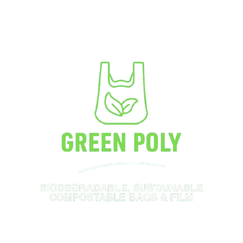
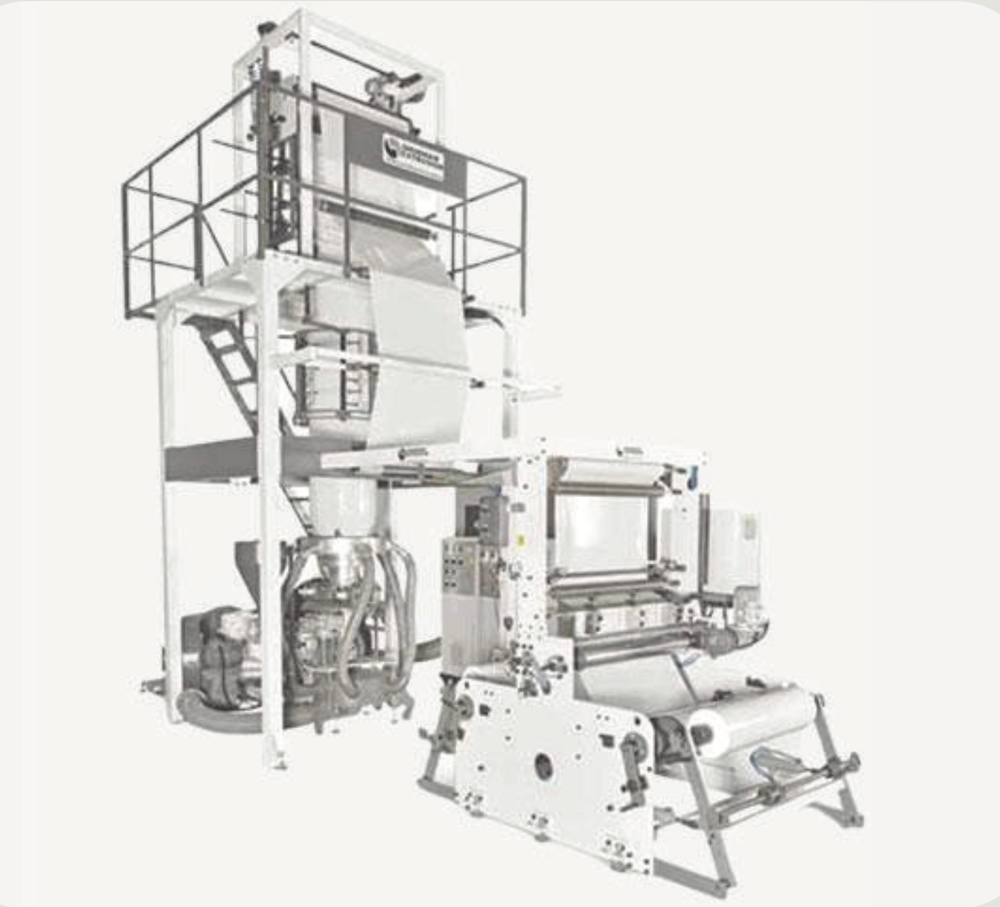
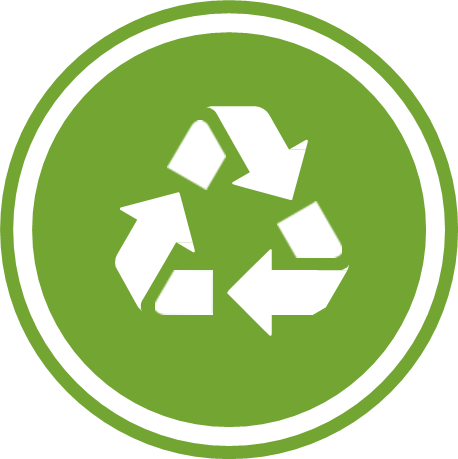
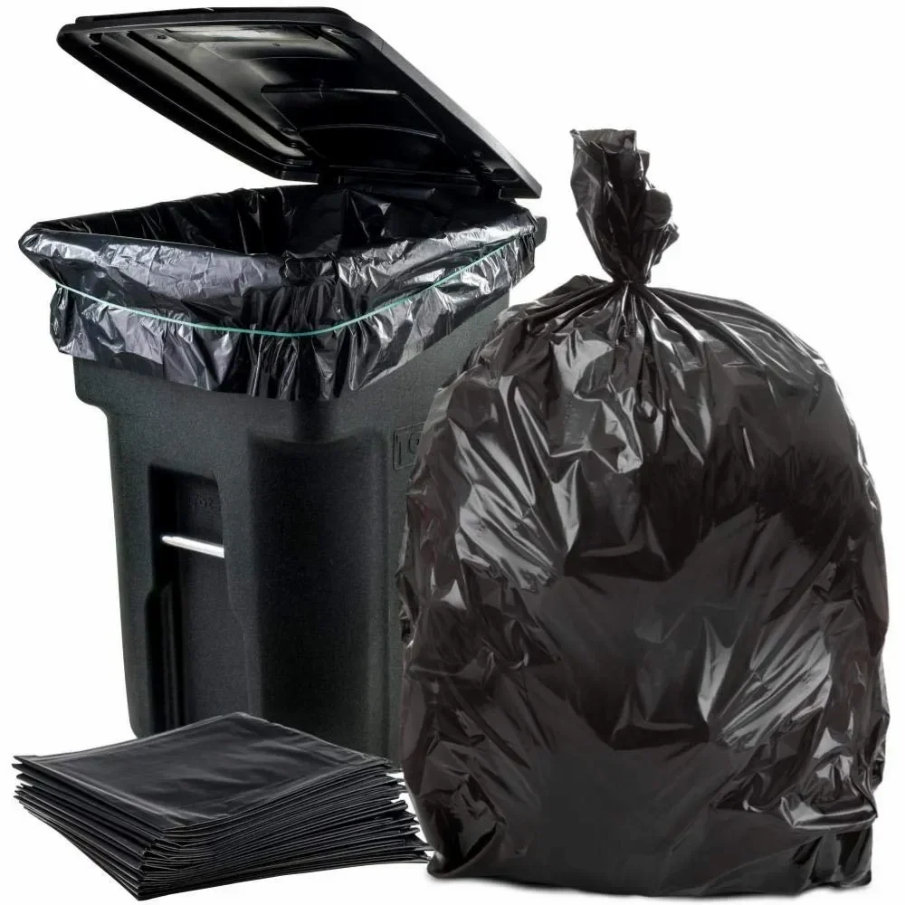
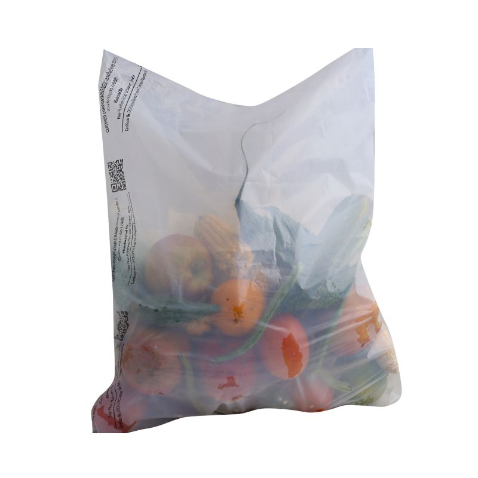
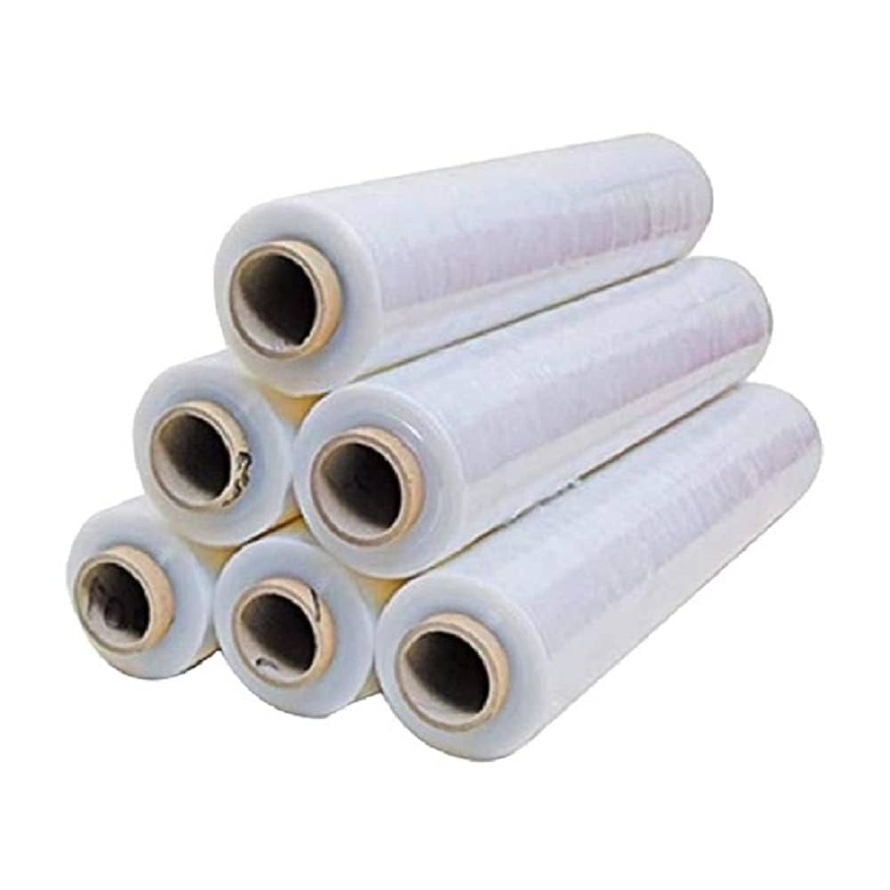

A brand of A A ENTERPRISE
Empowering Sustainable Futures With Compostable Packaging
Our products break down naturally without harming the environment, supporting a cleaner planet.
Tailor-made solutions to suit your packaging needs across various industries.
Join a growing network committed to sustainability and positive environmental impact.
Affordable and eco-friendly solutions without compromising quality or performance.

At GreenPoly, we believe in shaping a sustainable future with innovative eco-solutions. Our products are crafted with biodegradable materials that help reduce your carbon footprint without compromising quality. Trusted by industries, loved by nature.
View More
“Sustainable development is the development that meets the needs of the present without compromising the ability of future generations to meet their own needs.”– Gro Harlem Brundtland
Innovative Compostable Packaging for a Greener Tomorrow



Compostable bioplastics are plastics derived from renewable resources that break down under composting conditions into water, CO₂, and biomass, leaving no toxic residue. Yes, they are plastics, but eco-friendly ones.
The Indian government has banned items such as plastic straws, cutlery, plates, stirrers, polystyrene, and certain packaging films to reduce plastic waste pollution.
Bioplastics often provide better durability and water resistance compared to paper or cloth. They are compostable, making them a sustainable alternative without compromising performance.
Compostable bioplastics are currently used in packaging, carry bags, agriculture films, and disposable tableware. Their scope is expanding to more industries as regulations push for sustainable solutions.
Ministry of Environment Forest & Climate Change, Central Pollutions Control Board, State Pollution Control Boards in every State, Pollution Control Committees in every Union Territories.
Yes, GreenPoly products are certified 100% compostable and meet global and Indian compostability standards.
Yes. Studies have shown microplastics entering the human body through food, water, and air. Compostable alternatives help in reducing this long-term impact.